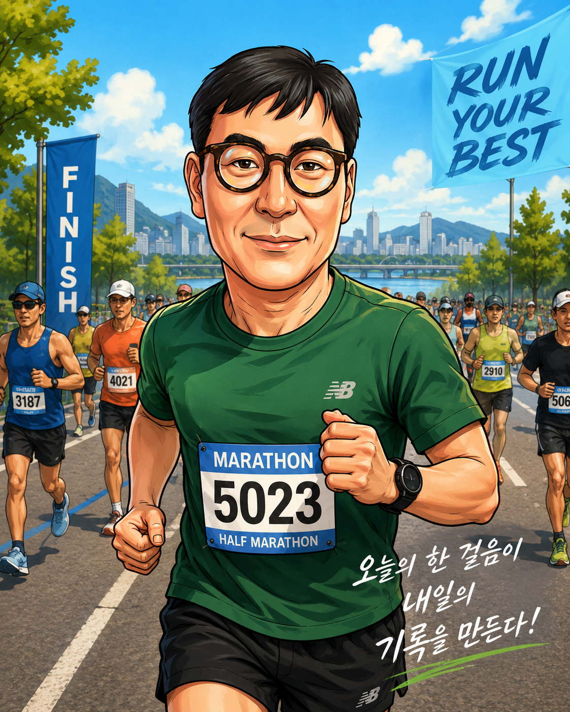

안녕하세요. 백해성입니다. 현재 AI 에이전트 마스터 과정을 수강하며 생성형 AI와 자동화 기술을 학습하고 있습니다.
건강한 삶을 위해 마라톤을 즐기며, 독서와 글쓰기를 통해 지속적인 성장을 추구하고 있습니다.
AI 교육자 · 마라토너 · 독서가 · 글쓰기 실천가

안녕하세요. 백해성입니다. 현재 AI 에이전트 마스터 과정을 수강하며 생성형 AI와 자동화 기술을 학습하고 있습니다.
건강한 삶을 위해 마라톤을 즐기며, 독서와 글쓰기를 통해 지속적인 성장을 추구하고 있습니다.
| 날짜 | 거리 | 시간 | 비고 |
|---|---|---|---|
| 2026-06-17 | 10km | 55분 | 탄천 러닝 |
| 날짜 | 대회명 | 장소 | 기록 | 비고 |
|---|---|---|---|---|
| 2026-06-13 | 성남마라톤 | 탄천종합운동장 10km | 55분 | 운영위원회 |
읽은 책의 핵심 내용을 정리하고 실천 가능한 아이디어를 기록합니다.
하루 한 편 이상 글을 작성하며 학습 내용과 경험을 기록합니다.
기록은 미래의 나에게 보내는 가장 좋은 선물이다.
AI 교육과 서비스를 통해 사람들의 성장을 돕고, 건강한 삶과 평생학습을 실천하는 교육자가 되고 싶습니다.
AI, 마라톤, 독서, 글쓰기를 연결하여 성장의 선순환을 만드는 것이 저의 목표입니다.